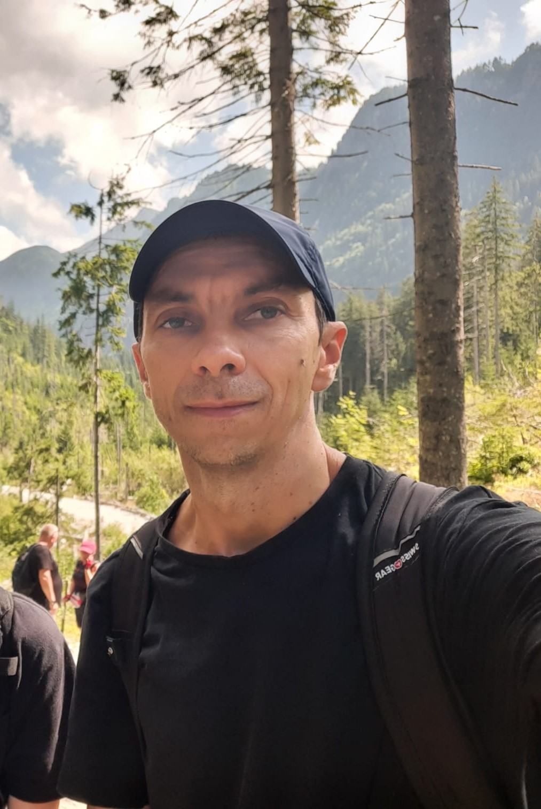

Krzysztof Klosin

Krzysztof Klosin
Department of Mathematics
Queens College CUNY
65-30 Kissena Blvd
Queens, NY 11367, USA
Email:
kklosin(at)qc(dot)cuny(dot)edu
Tel: +1 718 997 5833
I am a professor in the Department of Mathematics at Queens College of the City University of New York (CUNY) and a member of the doctoral faculty at the Graduate Center of CUNY. I received my Ph.D. from the University of Michigan in 2006. My thesis advisor was Chris Skinner. Thanks to two of my students Vivian Kuang and Rochelle Luong I now know that I have an Erdös number of 3.
My other academic affiliations:
- Princeton University (Visiting Research Scholar 2017-2018)
- Max Planck Institute for Mathematics, Bonn (Guest Researcher 2010, 2011)
- Université Paris 13 (Postdoc 2009-2010)
- Cornell University (Visiting Assistant Professor 2008-2009)
- University of Utah (Burgess Assistant Professor 2006-2008)
If you are a student and are looking for my YouTube channel, click here.
The Graduate Center Arithmetic Geometry Seminar
I am a co-organizer (along with Heidi Goodson) of the Graduate Center Arithmetic Geometry Seminar which meets on (some) Tuesdays 3-4pm at the Graduate Center. Anyone interested in attending is welcome to stop by or join in by zoom.Ph.D. students
Joe Kramer-Miller - graduated May 2016 from the CUNY Graduate Center. Postdoctoral positions at the University College London and at UC Irvine. Currently an Assistant Professor at Lehigh University.Lawrence Vu - graduated September 2019 from the CUNY Graduate Center. His thesis was published in J. Number Theory 198 (2019), 250-292.
Geoffrey Akers - currently a Ph.D. student at the CUNY Graduate Center.
Xiaoyu (Coco) Huang - graduated May 2024 from the CUNY Graduate Center. Her thesis was published in Kyoto J. Math. Currently a postdoc at Temple University.
Research
My research is in algebraic number theory. More specifically I am interested in: the Bloch-Kato conjecture for modular forms, congruences among automorphic forms on GL(2) and higher-rank groups, modularity of Galois representations, special values of L-functions, the Paramodular Conjecture.Papers/preprints
(The versions below may differ slightly from the published versions. Please, contact me for the latest versions of the papers.)- R=T theorems for weight one modular forms
(with T. Berger),
Trans. Amer. Math. Soc., 376(2023) no.11, 8095–8128.
- Irreducibility of limits of Galois representations of Saito-Kurokawa type
(with T. Berger), Res. Number Theory, 7(3):Paper No. 41, 25, (2021). Open access article: here
- Deformations of Saito-Kurokawa type and the Paramodular Conjecture
(with T. Berger, appendix by C. Poor,
J. Shurman, D. S. Yuen), Amer. J. Math. 142 (2020), no. 6, 1821-1876.
- Galois extensions and a conjecture of Ogg
(with M. Papikian),
Proc. Amer. Math. Soc. 148 (2020), 3821-3834.
- Congruence
primes for automorphic forms on
unitary groups and applications to the arithmetic of Ikeda lifts
(with
J. Brown),
Kyoto J. Math. 60 (2020), no. 1, 179-217.
- Modularity of residual Galois extensions and the Eisenstein ideal
(with T. Berger),
Trans. Amer. Math. Soc. 372 (2019), no. 11,
8043-8065.
- A p-adic Hermitian Maass lift
(with T. Berger), Glasg. Math. J. 61 (2019), no. 1, 85–114.
- On Ribet's isogeny for J_0(65)
(with M. Papikian),
Proc. Amer. Math. Soc. 146 (2018), no. 8, 3307–3320.
- On the action of the U_p operator on the local (at p) representation attached to congruence level Siegel modular forms
(with
J. Brown),
Ramanujan
J. 44 (2017), no. 3, 597–615.
- On lifting and
modularity of reducible residual Galois representations over imaginary
quadratic fields (with
T. Berger), Int. Math. Res. Not. IMRN (2015), no. 20, 10525–10562. (There is an error in the
proof of Lemma 4.6. This makes the statements pertaining to the existence of a modular basis (as in Corollary 4.8)
conditional upon the conclusion of that lemma. This also impacts some statements made in [5] above. We will post a correction
here soon.)
- Maass spaces on U(2,2) and the
Bloch-Kato conjecture for the symmetric square
motive of
a modular form, J.
Math. Soc. Japan, Vol. 67, No. 2 (2015) pp.
797-860.
This version contains more
details than the published version.
- On higher
congruences between automorphic forms (with T. Berger, K. Kramer), Math.
Res. Lett., 21 (2014), no. 1, 71-82.
- A note on Hecke eigenvalues of
hermitian Siegel Eisenstein series, Ramanujan
J., 35 (2014), no. 2, 287-298. The final
publication is available here.
- On deformation rings of residually reducible
Galois representations and R=T theorems (with T. Berger), Math.
Ann., 355 (2013), no. 2, 481-518. The original publication is
available at www.springerlink.com - click here
to access the published version).
- On Ihara's lemma for degree one and
two cohomology over imaginary quadratic fields, Int.
J. Number Theory, 09 (2013), 1541-1561.
- Yoshida lifts and the Bloch-Kato
conjecture for the convolution
L-function (with M.
Agarwal), J. Number
Theory, 133 (2013), 2496-2537.
- An R=T theorem for imaginary quadratic
fields (with T.
Berger), Math.
Ann., 349 (2011), no. 3, 675-703.
The original publication is
available at www.springerlink.com - click here
to access the published version).
- A deformation problem for
Galois
representations of imaginary
quadratic fields (with
T. Berger),
J. Inst. Math. Jussieu, (2009) 8(4), 669-692 .
(copyright to
the linked document
held by Cambridge University Press).
.
- Congruences among modular forms on
U(2,2)
and the Bloch-Kato conjecture, Ann. Inst.
Fourier (Grenoble), 59 no. 1 (2009), p. 81-166).
- Ihara's lemma for imaginary
quadratic
fields, J. Number
Theory, 128 (2008), 2251-2262.
Some recent and upcoming talks:
- Colloquium (Oliver Club), Cornell University, November 9, 2023.
-
AMS Fall Eastern Sectional Meeting, Special session on Homological Aspects of p-adic Groups and Automorphic Representations, University at Buffalo, September 9, 2023.
- Lehigh Algebraic/Arithmetic Geometry Seminar, Lehigh University, November 11, 2022.
-
Joint Columbia-CUNY-NYU Number Theory Seminar, CUNY Graduate Center, November 3, 2022.
-
AMS Fall Eastern Sectional Meeting, Special session on Iwasawa Theory, University of Massachusetts-Amherst, October 1, 2022.
-
Workshop on Eisenstein Series, L-functions, and arithmetic, University of Pittsburgh, May 18, 2022.
- Philadelphia Area Number Theory Seminar,
Bryn Mawr College,
November 4, 2021.
- Number Theory Seminar,
University of California, Irvine,
May 13, 2020. Zoom link: https://uci.zoom.us/j/98027654087
- Topology, Geometry and Physics Seminar,
CUNY Graduate Center, New York,
September 25, 2019.
- Arithmetic Algebraic Geometry Seminar,
University of A. Mickiewicz, Poznan, Poland,
August 6, 2019.
- Conference on
p-adic families of automorphic forms and Galois representations,
University of Sheffield, UK,
July 15-19, 2019.
- AMS Sectional Meeting,
University of Connecticut, Hartford, CT,
April 13-14, 2019.
- 33rd
Automorphic Forms Workshop,
Duquesne University,
Pittsburgh, PA, March 6-10, 2019.
- Arithmetic Algebraic Geometry Conference,
Poznan, Poland, August 26 - September 1, 2018.
- Connecticut Summer School in Number Theory Conference, University of Connecticut, June 2,
2018, at 3:20 pm.
- Algebra
and Number Theory Seminar, Pennsylvania State University, April 26,
2018, at 11:00 am.
- 32nd
Automorphic forms Workshop,
Tufts University, March 19-22, 2018.
- Philadelphia Area Number Theory Seminar, Bryn Mawr College, December 6,
2017, at 2:40 pm.
- Number Theory Seminar,
University of Sheffield, UK, August 3, 2017 at 2:00 pm.
- Colloquium, University of A. Mickiewicz, Poznan, Poland,
July 20,
2017 at 12:00 pm.
- Algebra
and Number Theory Seminar, Pennsylvania State University, May 4,
2017, at 11:00 am.
- 2nd International Conference on Galois Representations and Automorphic Forms,
The Banach Conference Center, Bedlewo, Poland, July 19, 2016 at 10:10 am.
- Number Theory Seminar,
University of Sheffield, UK, July 21, 2016 at 2:00 pm.
- 30th
Automorphic forms Workshop,
Wake Forest University, NC, March 8, 2016 at 10 am.
- Workshop
on Bianchi and Siegel modular forms,
Sheffield, UK, July 16, 2014 at 11:00 am.
- Building
Bridges: 2nd EU-US conference on Automorphic Forms and related topics
,
Bristol, UK, July 9, 2014 at 9:30 am.
- 28th
Automorphic forms Workshop,
Moab, UT, May 12, 2014 at 3:30 pm.
- Algebra
and Number Theory Seminar, Pennsylvania State University, March 6,
2014, at 11:15 am.
- Number
Theory Seminar, University of North Carolina at Chapel Hill, November
5,
2013, at 3:30 pm.
- Algebra and
Number Theory Seminar, Universitat Heidelberg, July 26,
2013, at 1:30 pm.
- Colloquium,
Universitat Heidelberg, July 25, 2013, at 5:00 pm.
-
Number
theory seminar, University
of California at San Diego, January 14, 2013, at 2 pm.
- Automorphic forms and
representation theory seminar, Purdue
University, October 25, 2012 at 1:30
pm.
- Number theory
seminar,
University of Sheffield, UK, August 13,
2012 at 11:00 am.
- Building
Bridges: 1st EU-US conference on Automorphic Forms and related topics
,
Aachen, Germany, August 8, 2012 at 4:40 pm.
- Algebraic K-theory and arithmetic
conference, The Banach Center, Bedlewo, Poland, July 25, 2012 at 3:00
pm.
- ESI
Programme on Automorphic Forms: Arithmetic and Geometry, Vienna,
Austria, January 17, 2012.
-
Number Theory seminar,
Clemson University, December 1, 2011 at 3:30 pm.
- Galois Representations and
Automorphic Forms - conference talk,
The Banach Center, Bedlewo, Poland, August 17, 2011 at 2:20 pm.
- Number theory lunch
seminar,
Max-Planck-Institut fuer Mathematik, Bonn, July 20,
2011 at 2:15 pm.
- Number theory
seminar,
University of Sheffield, UK, June 29,
2011 at 1:10 pm.
- Colloquium, Szczecin University, Szczecin, Poland,
January 20,
2011 at 4:00 pm.
- Seminaires
de
l'equipe d'Arithmetique et Geometrie Algebrique, Universite Paris
Nord, January 7, 2011
at 10:30 am.
- Colloquium, University of A. Mickiewicz, Poznan, Poland,
December 22,
2010 at 12:00 pm.
-
Collaborative Number Theory Seminar at the CUNY Graduate Center,
CUNY, November 19,
2010 at 4:00 pm.
-
Number Theory seminar,
Northwestern University, November 1,
2010 at 2:00 pm.
-
Colloquium,
CUNY Queens College, October 5.
- Oberseminar
(Algebra, Geometrie und Zahlentheorie),
University of Duisburg-Essen, June 1,
2010 at 4:15 pm.
- Number Theory Seminar,
DPMMS,
University of Cambridge, March 9,
2010 at 2:30 pm.
- Seminaire
Arithmetique et geometrie algebrique,
Universite Louis Pasteur Strasbourg, February 22,
2010 at 4:00 pm.
- Seminaires
de
l'equipe d'Arithmetique et Geometrie Algebrique, Universite Paris Nord, November 6, 2009
at 10:30 am.
- Seminaire de theorie des nombres de Chevaleret, Universite Paris 6 et 7, October 26, 2009 at 2:00 pm.
Expository articles/talks
- On the norms of p-stablized elliptic
newforms (with
Jim Brown with appendix
by Keith Conrad).
- Congruences among automorphic forms
on unitary groups and the Bloch-Kato conjecture (pdf) - slides from my talk at the Joint Meeting
of the AMS in San Diego (January 2008).
- Some local (at p) properties of
residual Galois representations (dvi,
pdf) - presented at the 2005-06
Number Theory Learning Seminar on the Serre's conjecture at the
University of Michigan.
- On the reflex norm (dvi, pdf)
-
presented in the
2004-2005
VIGRE Number Theory Working Group on complex multiplication of abelian
varieties at the University of Michigan.
- On
variations of Hodge
structures
- presented at the 2002 Arizona
Winter School on "Periods" (with J. Brown, Kirsten
Eisentrager, Jorge Pineiro, Mak Trifkovich, Oliver Watson,
supervised by Prof. Johan
deJong).
- Finiteness of Mordell-Weil (dvi, pdf)
-
presented
in the 2003-2004
VIGRE Number Theory Working Group on torsion points of elliptic curves
over Q at the University of Michigan.
- Application of Mordell-Weil finiteness (dvi, pdf) - presented in the 2003-2004 VIGRE Number Theory Working Group on torsion points of elliptic curves over Q at the University of Michigan.